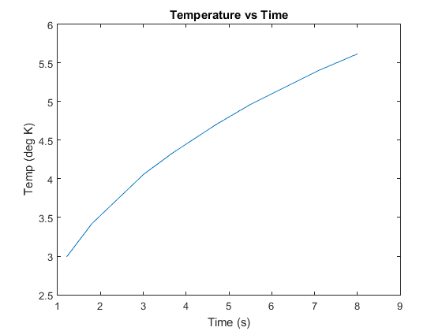

clc;
clear;
fprintf('Gage Farmer, HW13, M/W 10AM\n');
fprintf('\nProblem 1\n')
format long
sum=0;
for n = 0:20
sum = sum + ((-1/3)^n)/(2*n+1);
end
sum = sum * sqrt(12);
error = (sum-pi())*100/pi()
format short
fprintf('\nProblem 2\n')
x = [-1 2 5 8 11 14 17];
y = [-3.5 45.1 392.5 1459.9 3668.5 7439.5 13194.1];
p=polyfit(x,y,3);
a=p(1)
b=p(2)
c=p(3)
d=p(4)
fprintf('\nProblem 3\n')
s = [1.21 1.8 3.01 3.67 4.69 5.49 7.12 8.01];
k = [2.99 3.42 4.06 4.33 4.7 4.96 5.41 5.62];
plot(s,k);
title('Temperature vs Time');
xlabel('Time (s)');
ylabel('Temp (deg K)');
s3 = nthroot(s,3);
g=polyfit(s3,k,1);
A=g(1)
Gage Farmer, HW13, M/W 10AM
Problem 1
error =
1.859564303762336e-10
Problem 2
a =
2.6000
b =
1.0000
c =
7.4000
d =
5.5000
Problem 3
A =
2.8126
